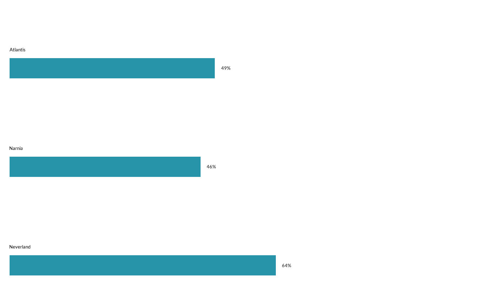
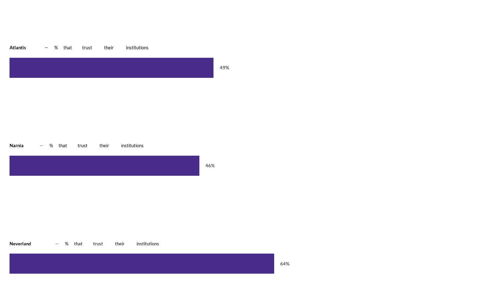
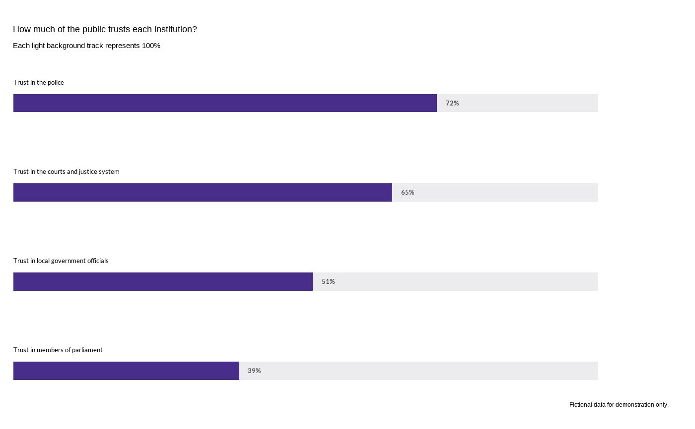

Plot a Horizontal Edgebars Chart following WJP style guidelines
Source:R/edgebarsChart.R
wjp_edgebars.Rd![[Experimental]](figures/lifecycle-experimental.svg)
wjp_edgebars() takes a data frame with long-format data and returns a
ggplot object with an edgebar chart following WJP style guidelines.
Edgebars are horizontal bars with the category label placed at the edge of
each bar, which makes them ideal for narrow spaces and long labels.
Values are expected on a 0-100 percentage scale.
Usage
wjp_edgebars(
data,
target,
grouping,
labels = NULL,
cvec = NULL,
x_lab_pos = NULL,
y_lab_pos = 0,
nudge_lab = 2.5,
margin_top = 20,
bar_width = 0.35,
ptheme = WJP_theme(),
order = NULL,
sort = c("none", "ascending", "descending"),
label_start = NULL,
scale = c("fixed", "auto"),
na_action = c("error", "omit"),
label_style = c("plain", "rich"),
label_wrap = 55,
label_size = 3.514598,
value_size = 3.514598,
row_spacing = 1,
accuracy = 1,
label_format = NULL,
show_values = TRUE,
value_position = c("end", "column"),
background_track = FALSE,
track_color = "#ecebed",
highlight = NULL,
neutral_color = "#b9b7bf",
series = NULL,
show_legend = TRUE,
ci_lower = NULL,
ci_upper = NULL,
ci_color = "#333333"
)Arguments
- data
Data frame containing the data to plot.
- target
String. Column name of the variable that supplies the values to plot.
- grouping
String. Column name of the variable that supplies the categories.
- labels
String. Column name of the variable containing the text labels to display above each bar. Default is
NULL(thegroupingvalues are used).- cvec
One bar color, or two colors for paired series. A named pair must match the series names. Defaults to WJP violet for single bars and violet/teal for pairs.
- x_lab_pos
String. Column name of the variable that contains the display order of the bars. Default is
NULL(data order). Preferorderin new code.- y_lab_pos
Numeric. Legacy alias for the horizontal label start. Default is
0; preferlabel_startin new code.- nudge_lab
Numeric. Padding for the text labels in millimeters. Default is
2.5.- margin_top
Numeric. Top margin of the plot. Default is
20.- bar_width
Numeric. Width of the bars. The default of
0.35is recommended for single bars. Paired bars occupy separate rows within each category.- ptheme
ggplot theme to apply. Default is
WJP_theme().- order
Column name for numeric category order (ascending, top to bottom). Preferred alias for
x_lab_pos; do not supply both.- sort
One of
"none","ascending", or"descending". Sorts by value; paired bars use the mean of the two values. Cannot be combined withorder.- label_start
Horizontal start of category labels. Preferred alias for
y_lab_pos; do not supply both.- scale
One of
"fixed"(0-100, default) or"auto".- na_action
"error"(default) or"omit". Omission removes entire categories with missing required values, preserving complete pairs.- label_style
"plain"(default) or"rich"(requires ggtext). Rich labels support HTML; insert<br>for line breaks.- label_wrap
Positive integer character width for plain-text wrapping. Use
Infto disable wrapping. Rich labels use explicit line breaks.- label_size, value_size
Text sizes in millimeters.
- row_spacing
Positive spacing multiplier; increase for crowded exports.
- accuracy
Positive rounding increment for percentage labels.
- label_format
Optional function taking numeric percentages and returning one character label per value. Overrides
accuracyformatting.- show_values
Logical. Show numeric value labels.
- value_position
"end"or"column"(aligned at the right). With confidence intervals, end labels follow the upper bound.- background_track
Logical. Draw a neutral track from 0 to 100.
- track_color
Color of the background track.
- highlight
Character vector of categories to highlight. Other categories use
neutral_color. With paired bars, highlighted pairs retain series colors.- neutral_color
Color for categories outside
highlight.- series
Optional column identifying exactly two series. Supply one row per category and series, with both series present in every category. First appearance determines series order, or use factor levels. For paired bars,
cvecmay be two colors named for the series.- show_legend
Logical. Show the series legend for paired bars.
- ci_lower, ci_upper
Optional columns of precomputed confidence bounds, on the same 0-100 scale. Supply both; bounds must enclose the estimate. The function does not estimate intervals or assume a survey design.
- ci_color
Color of confidence interval lines and end caps.
Details
The function expects one row per bar: the category in grouping and its
value in target. The text above each bar defaults to the grouping
values; pass a labels column to customize it (HTML is supported
with label_style = "rich" and the ggtext package installed). Percentage value labels are added
automatically at the end of each bar.
Categories must be unique unless series is supplied. Custom labels and
explicit order values must be constant within a category. Invalid or infinite
percentages are rejected. Missing values follow na_action.
The fixed scale makes separate charts comparable; tracks always span 0-100.
Labels are positioned independently of optional rich-text support. Wrapped
labels reserve additional vertical space. Export height should grow with the
number of categories and label lines; very small devices can still crowd text.
nudge_lab controls the gap above bars in millimeters. Positive plot margins
leave room for titles and captions. Font registration is optional; use
options(wjpr.family = "sans") for a portable system font.
Examples
library(dplyr)
# Always load the WJP fonts
wjp_fonts()
# Percentage of people that trust their institutions, by country
data4edgebars <- WJPr::gpp %>%
filter(year == 2022) %>%
mutate(
q1a = as.double(unclass(q1a)),
trust = case_when(q1a <= 2 ~ 1, q1a <= 4 ~ 0)
) %>%
group_by(country) %>%
summarise(trust = mean(trust, na.rm = TRUE) * 100, .groups = "drop")
wjp_edgebars(
data4edgebars,
target = "trust",
grouping = "country",
cvec = "#2894aa"
)

# Custom rich-text labels above each bar (requires ggtext)
data4edgebars_lab <- data4edgebars %>%
mutate(
bar_label = paste0(
"<b>", country, "</b> — % that trust their institutions"
)
)
wjp_edgebars(
data4edgebars_lab,
target = "trust",
grouping = "country",
labels = "bar_label",
label_style = "rich"
)

# 100% background tracks behind each bar (fictional data; see examples/edgebars.R)
institutions <- data.frame(
institution = c("Police", "Courts", "Local government", "Parliament"),
trust = c(72.4, 64.8, 51.2, 38.6),
bar_label = c(
"Trust in the police", "Trust in the courts and justice system",
"Trust in local government officials", "Trust in members of parliament"
)
)
wjp_edgebars(
institutions,
target = "trust",
grouping = "institution",
labels = "bar_label",
background_track = TRUE
) +
ggplot2::labs(
title = "How much of the public trusts each institution?",
subtitle = "Each light background track represents 100%",
caption = "Fictional data for demonstration only."
)
